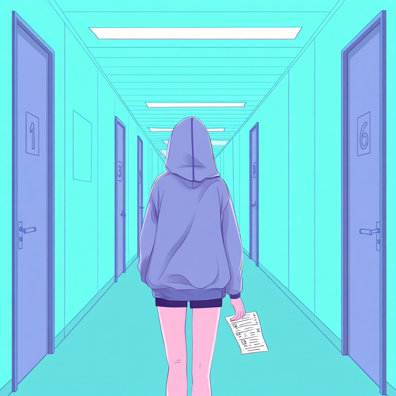

MDPH, ALD : énergie perdue, réponses floues
« Je ne vais pas mettre toute cette énergie dans un dossier qui, de toute façon, ne sera probablement plus d'actualité dans un an. »
Deuxième volet du récit d'une jeune adulte suivie au CEREMAIA : les démarches administratives, quand le parcours de soin est lui-même incertain. Ses mots sont retranscrits tels quels, anonymement et avec son accord.
Les démarches, vues de l'intérieur

À quel moment tu t'es dit “handicap” ?
Ensuite, je suis aussi passée par une période où je me suis dit : “En fait, je commence à perdre la vue. Ma situation actuelle n'est vraiment pas celle de quelqu'un de normal. Est-ce que j'ai le profil de quelqu'un en situation de handicap ?”
Pourquoi tu n'as pas fait les démarches ?
Finalement, j'ai plutôt abandonné cette démarche parce qu'entre-temps, ma situation a évolué.
C'était quoi le besoin, concrètement ?
Pour moi, c'était surtout la question des transports. Je ne pouvais pas conduire et j'avais beaucoup de difficultés à me déplacer. Je voyais mal et, à ce moment-là, rien ne permettait vraiment d'améliorer ma vue dans l'état où j'étais. J'aurais donc eu besoin d'aide, notamment pour les transports.
Qu'est-ce qui bloque avec la MDPH ?
Pour faire une demande à la MDPH, il fallait constituer un dossier qui serait traité longtemps après, etc. Du coup, je me suis dit : “Je ne vais pas mettre toute cette énergie dans un dossier qui, de toute façon, ne sera probablement plus d'actualité dans un an, puisque je savais qu'avec l'opération, j'allais récupérer la vue.”
Le plus dur, c'était l'incertitude ?
Mais je ne savais pas quand l'opération allait avoir lieu, ni quel allait être le résultat. Les médecins ne le savaient pas non plus. Tout mon parcours était assez incertain. Et, dans tous les cas, je n'avais aucune certitude sur ce que la MDPH pourrait m'apporter.
Tu as trouvé de l'aide ailleurs ?
J'avais regardé du côté des associations, mais je n'ai jamais vraiment passé le cap de les appeler ou de chercher quelqu'un qui aurait pu m'apporter des informations. Et, en effet, il manque des personnes qui ont ces informations, parce que mes médecins, eux, ne les avaient pas. Ils n'étaient pas spécialistes de la MDPH ni de toutes ces démarches.
Et l'ALD ?
Oui. Même pour l'ALD, par exemple. C'est quelque chose que j'ai obtenu après coup, mais là aussi, ça a été un peu compliqué. Tout le monde se renvoyait la balle. L'ALD, c'est quelque chose qu'il faut mettre en place, généralement avec le médecin généraliste, mais ça a semblé être toute une galère. Finalement, j'ai réussi à l'obtenir, mais ce n'était pas non plus très clair ni très simple.
Lire les autres témoignages
Témoignage 1 sur 3
« Devenir quelqu'un de malade ». L'entrée dans le monde de la santé, du jour au lendemain, et la place à prendre dans les décisions.
Témoignage 3 sur 3
Les autres ne comprennent pas, les pairs oui. Le regard de l'entourage, et ce que seuls ceux qui l'ont vécu peuvent partager.
Tous les récits
Les verbatims des ados et jeunes adultes suivis au CEREMAIA, thème par thème, et d'autres témoignages à écouter ou à lire.